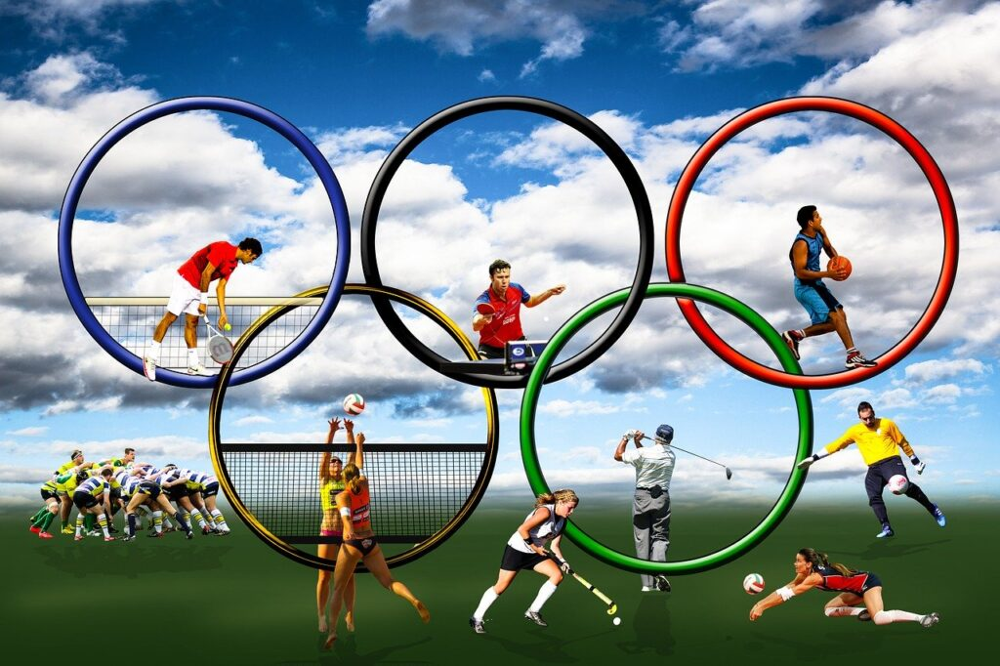

Tecnologia
Tecnologia é a aplicação prática de conhecimentos científicos e técnicos para criar ferramentas, processos e sistemas que resolvem problemas humanos e ampliam capacidades. Ela abrange desde inovações digitais, como Inteligência Artificial e blockchain, até ferramentas físicas, sendo crucial para o desenvolvimento social, automação e aumento da produtividade global.

Esportes
Esporte é uma atividade física ou mental, competitiva e estruturada, regida por regras institucionais, que visa a melhoria da aptidão física, lazer ou competição. Diferencia-se do jogo pela formalidade e das atividades físicas casuais pelo treinamento e competição organizada.
Educação
A educação é um processo contínuo de formação, ensino e aprendizagem, essencial para o desenvolvimento humano, social e cognitivo. Ela atua como ferramenta de transformação, liberdade e inclusão, visando desenvolver competências e potencialidades. A educação é dividida em formal (escola), não formal e informal, abrangendo pilares como conhecer, fazer, conviver e ser.